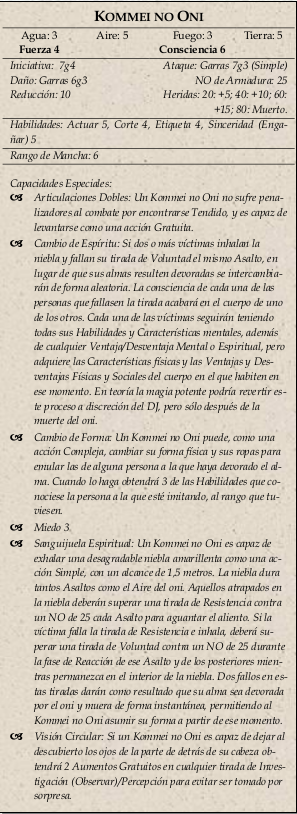

|  |
Este combate debería ser duro y letal. Los enemigos son
poderosos, y al único al que quieren con vida es a Kage.
No dudes en utilizar las capacidades de Bersérker de Kage y las capacidades de los dos guardaespaldas para cambiar las
tornas, pero no les dejes robarle protagonismo de los PJs.
Lanzar a los bushi a la sima podría salvar muchas vidas. El Kommei se enfrentará a los personajes heridos o débiles
para devorar sus almas.
Para disfrutar totalmente de esta aventura, asegúrate de que dos PJs, preferiblemente los que sean más opuestos en
moralidad, sexo o posición social, acaben ahogados y sus almas intercambiadas por Kommei no Oni.
Esto les dejará inconscientes de forma inmediata, por lo que no de percatarán de lo sucedido hasta que regresen a Kyuden Hida..
|